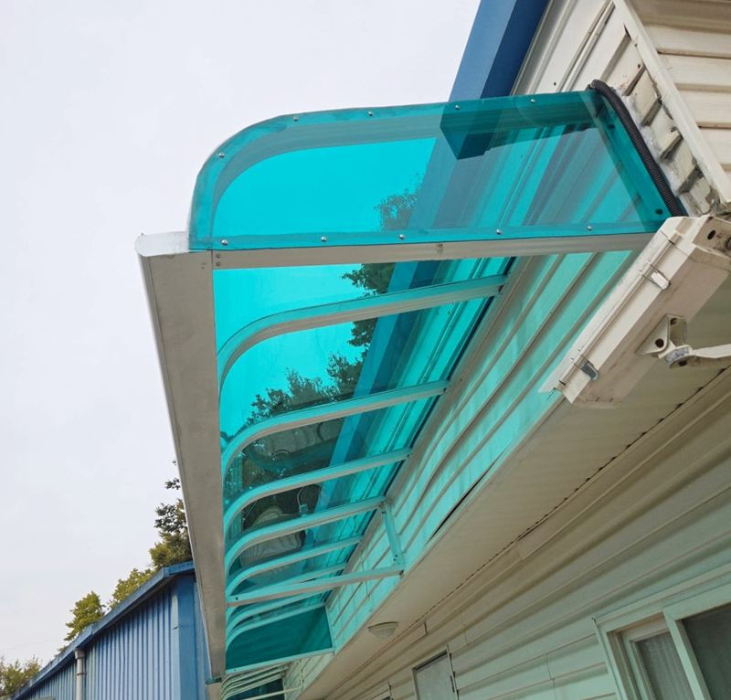
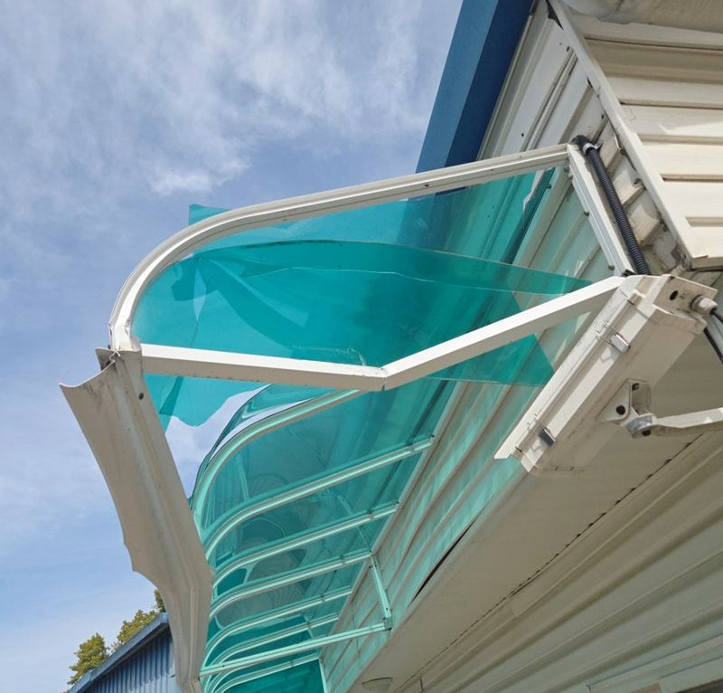
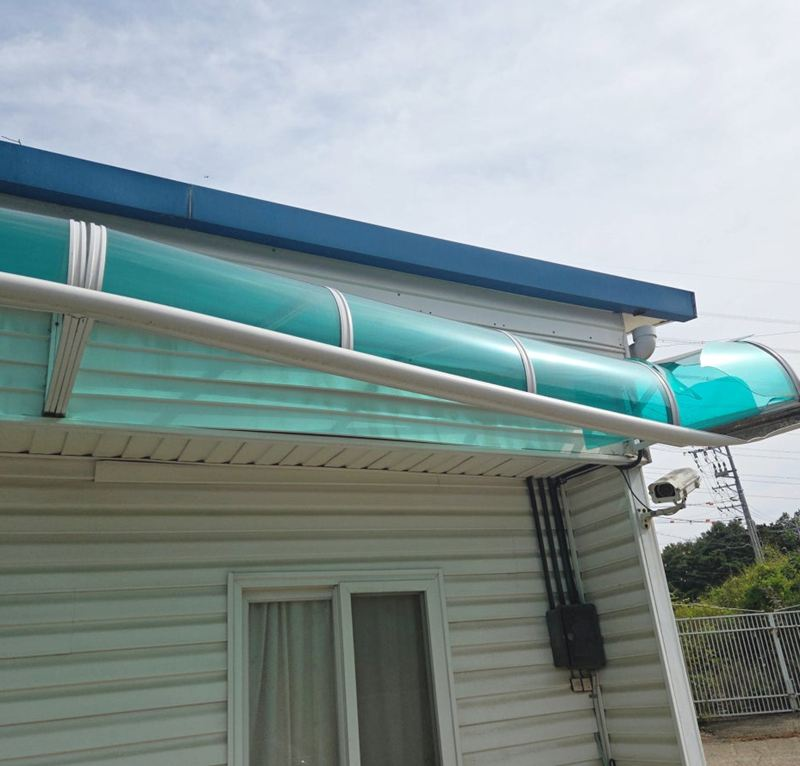
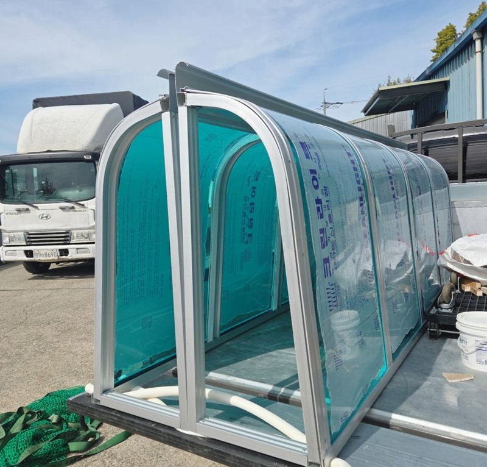
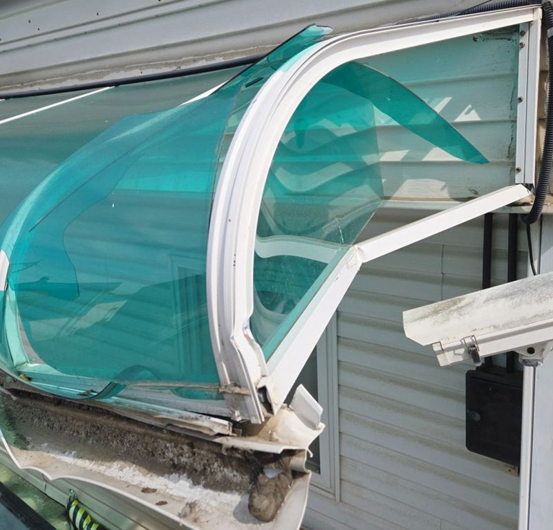
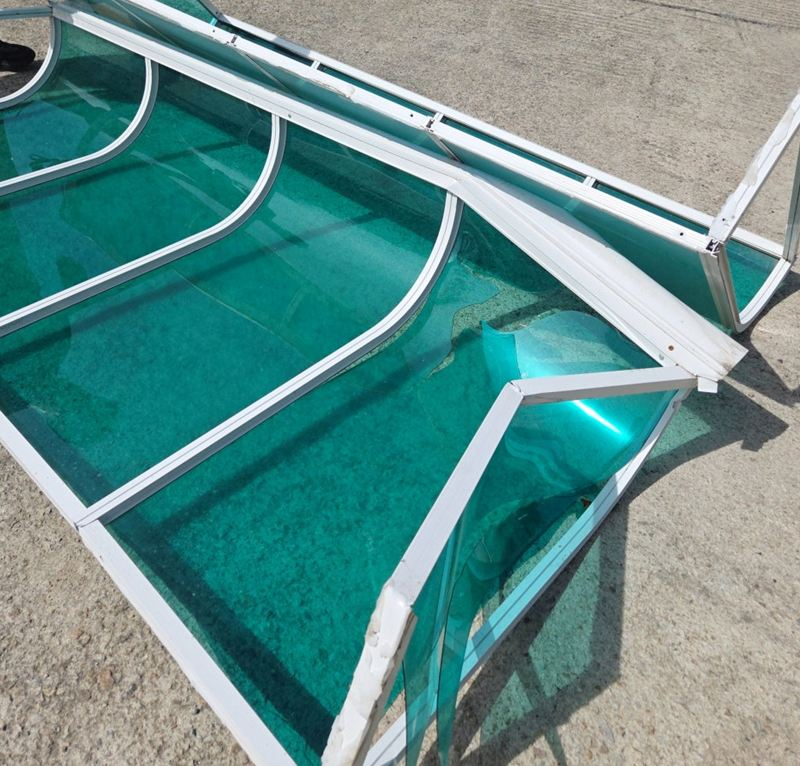
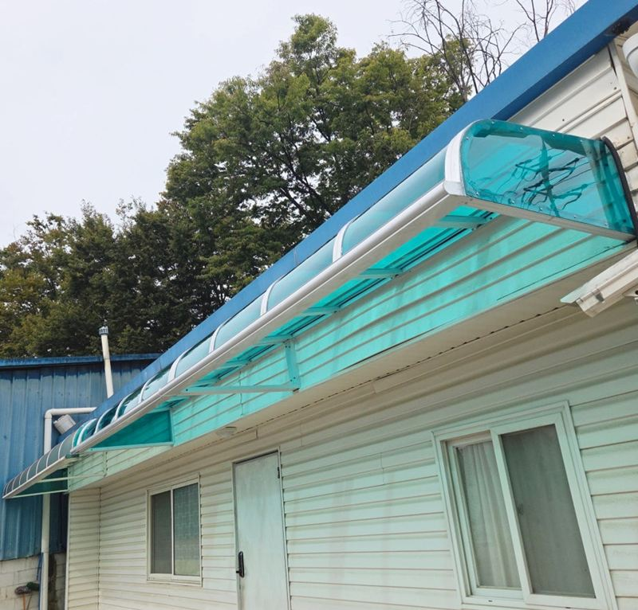

화성 빗물받이 렉산 교체 비용, 파손 범위별 차이


교체 전교체 후← 밀어서 전후 비교 →
"차가 부딪히면서 빗물받이 일부가 휘고 깨졌어요. 전부 바꾸기보다 깨진 데만 바꿀 수 있을까요?" 화성 팔탄면 건물 외벽에 길게 달린 렉산 빗물받이(캐노피)였어요. 끝 쪽 한 칸이 꺾여 렉산판이 갈라져 있었고, 나머지 구간은 멀쩡했어요. 살릴 구간과 바꿀 구간을 나누고, 파손 부분만 실측해 공장에서 제작한 뒤 앙카와 실리콘으로 이어 붙였어요.
| 현장 | 화성 팔탄면 건물 외벽 렉산 빗물받이 |
|---|---|
| 증상 | 차량 충격으로 한쪽 구간 프레임 휨, 렉산 갈라짐 |
| 요청 | 전체 교체 대신 파손 구간만 교체 |
| 한 일 | 파손 범위 구분 → 실측 → 공장 제작 → 파손부 철거 → 설치면 정리 → 앙카 고정 → 실리콘 마감 |
깨진 구간만 바꿀 수 있는지 먼저 보기
렉산 빗물받이가 부서졌다고 늘 전체를 갈아야 하는 건 아니에요. 프레임이 칸칸이 나뉘어 있고 남은 구간의 고정이 튼튼하면, 다친 칸만 떼고 새로 만든 칸을 이어 붙일 수 있어요. 이 현장도 휘어진 건 끝 쪽 한 구간이라 부분 교체로 방향을 잡았어요.


현장에서 바로 판을 끼우는 방식이 아니라, 크기와 휘어진 정도(곡률)를 재서 공장에서 만든 뒤 가져와 다는 순서였어요. 치수가 어긋나면 이음부에 틈이 생기거나 고정이 불안해서 실측을 꼼꼼히 했어요.
기존 렉산과 100% 같지는 않아요
렉산 빗물받이는 만든 회사마다 곡률, 색, 두께, 부속이 조금씩 달라요. 그래서 새로 만든 칸이 기존 칸과 완전히 똑같기는 어렵고, 이어지는 자리에서 차이가 보일 수 있어요. 이 부분은 작업 전에 미리 말씀드렸고, 고객분도 알고 진행하셨어요.


철거할 때도 조심했어요. 기존 판은 실리콘과 앙카로 붙어 있었고 크기가 커서, 흔들리거나 떨어지지 않게 잡으면서 필요한 부분만 떼어 냈어요. 힘으로 뜯으면 남길 칸까지 다칠 수 있어요.
교체 비용이 갈리는 기준
| 기준 | 확인하는 것 |
|---|---|
| 파손 범위 | 전체인지, 한두 칸인지 |
| 렉산 형태 | 곡률·색·두께, 제작이 필요한지 |
| 고정 상태 | 앙카·실리콘·기존 프레임이 튼튼한지 |
| 설치 높이 | 안전 장비가 더 필요한지 |
| 마감 범위 | 빗물 막는 실리콘을 어디까지 할지 |
새 칸을 달기 전 옛 실리콘과 찌꺼기를 걷어 설치면을 정리했어요. 면이 지저분하면 새 자재가 바로 붙지 않고, 틈으로 빗물이 새요. 새 렉산은 벽에 앙카로 고정하고, 벽과 만나는 선과 새 칸·옛 칸이 이어지는 선을 실리콘으로 막았어요.


고객분은 "전부 바꿔야 하나 걱정했는데 깨진 데만 바꿀 수 있어 다행이고, 완전히 같을 수 없다는 것도 미리 들어서 결과를 이해하기 쉬웠다"고 하셨어요.
전체 교체가 나은 경우도 있어요
부분 교체가 늘 답은 아니에요. 남은 구간도 햇빛에 바래 금이 가 있거나, 프레임이 녹슬어 앙카가 헐거워졌다면 한 칸만 새로 달아도 곧 다른 칸에서 문제가 생겨요. 이럴 땐 전체를 새로 맞추는 쪽이 결과적으로 손이 덜 가요.
- 부분 교체가 맞을 때한두 칸만 다쳤고 나머지 판과 고정이 튼튼할 때
- 전체 교체가 맞을 때여러 칸이 바래고 갈라졌거나, 프레임 고정이 전반적으로 약할 때
렉산 빗물받이 교체 질문
판만 깨지고 프레임은 멀쩡해요.
그럴 땐 렉산판만 갈아 끼우는 경우도 있어요. 프레임 상태를 보고 정해요.
색이 바랜 렉산도 바꿀 수 있나요?
오래돼 누렇게 변하거나 금이 간 판도 바꿔요. 전체 교체와 부분 교체를 비교해 드려요.
실리콘만 다시 쏘면 안 되나요?
이음부에서 물만 샌다면 실리콘 재시공으로 되는 경우도 있어요. 판이 깨졌다면 교체가 필요해요.
제작은 얼마나 걸리나요?
크기와 형태에 따라 달라요. 실측 뒤 일정을 따로 안내해요.
높은 곳에 달린 빗물받이도 되나요?
높이에 따라 사다리나 장비가 필요해요. 사진으로 높이를 먼저 확인해요.
차량 보험으로 처리하려면요?
파손 직후 사진과 작업 내역이 필요할 수 있어요. 보험사에서 요구하는 서류를 먼저 확인해 두세요.
부분 교체한 칸만 먼저 낡지 않을까요?
새 칸이 오히려 더 새것이라 색 차이가 보일 수 있어요. 나머지 구간이 오래됐다면 시간이 지나 전체 교체를 함께 생각해 볼 수 있어요.
다른 렉산·우수관 현장
빗물받이 전체와 깨진 구간을 나눠 찍어 보내 주세요.
전화 상담 010-4517-9872